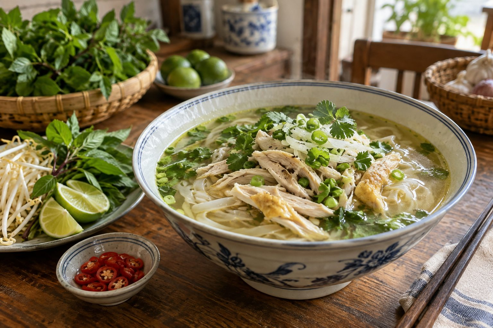

Thử nước dùng
Nếm một thìa nước dùng khi còn nóng để cảm nhận vị ban đầu trước khi thêm gia vị.
Một chút chậm rãi
Không cần cầu kỳ: chỉ cần một tô phở còn nóng và chút thời gian để cảm nhận từng hương vị.
Bắt đầu từ hương thơm
Trước khi ăn, hãy nhìn màu nước dùng, cảm nhận hơi nóng và mùi rau thơm bay lên. Những chi tiết nhỏ ấy khiến bữa ăn trở nên thú vị hơn.
Phở là món ăn dễ chia sẻ. Một người thích vị thanh, người khác thích cay hơn một chút — mỗi cách đều tạo ra trải nghiệm riêng.

Gợi ý đơn giản
Nếm một thìa nước dùng khi còn nóng để cảm nhận vị ban đầu trước khi thêm gia vị.
Gắp một ít bánh phở với phần nguyên liệu trong tô. Cảm nhận độ mềm của sợi bánh và sự hòa quyện của các thành phần.
Nếu thích, hãy thêm chanh, ớt hoặc rau thơm từng chút một. Nếm lại để giữ được sự cân bằng mà bạn muốn.
Những điều nhỏ làm nên niềm vui
Nước dùng nóng giúp hương thơm của phở rõ hơn và sợi bánh giữ được cảm giác mềm mại.
Bắt đầu với lượng nhỏ rồi nếm lại, để bạn dễ tìm được sự cân bằng phù hợp.
Một bữa ăn giản dị cũng trở nên đáng nhớ hơn khi có người ngồi cạnh.
Nếu thường ăn phở bò, lần tới bạn có thể thử phở gà hoặc phở chay để khám phá thêm.